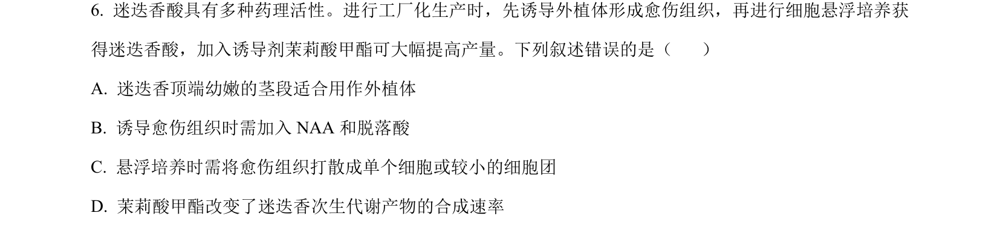
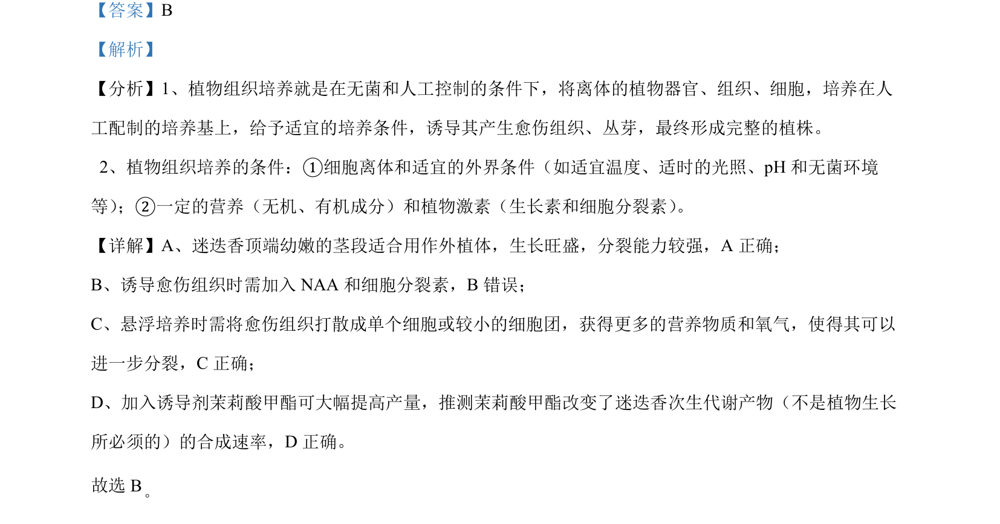

考点：植物组织培养 愈伤组织 悬浮培养 次生代谢产物

该题结合植物组织培养技术，考查外植体选择、激素使用、悬浮培养步骤及次生代谢调控。

📄 原 PDF 第 4 页：
素材/真题/吉林/2008-2024·（吉林）生物高考真题/2024年高考生物试卷（辽宁）（解析卷）.pdf
【答案】B 【解析】 【分析】1、植物组织培养就是在无菌和人工控制的条件下，将离体的植物器官、组织、细胞，培养在人 工配制的培养基上，给予适宜的培养条件，诱导其产生愈伤组织、丛芽，最终形成完整的植株。 2 、植物组织培养的条件：①细胞离体和适宜的外界条件（如适宜温度、适时的光照、pH 和无菌环境 等） ；②一定的营养（无机、有机成分）和植物激素（生长素和细胞分裂素） 。 【详解】A、迷迭香顶端幼嫩的茎段适合用作外植体，生长旺盛，分裂能力较强，A 正确； B、诱导愈伤组织时需加入 NAA 和细胞分裂素，B错误； C、悬浮培养时需将愈伤组织打散成单个细胞或较小的细胞团，获得更多的营养物质和氧气，使得其可以 进一步分裂，C正确； D、加入诱导剂茉莉酸甲酯可大幅提高产量，推测茉莉酸甲酯改变了迷迭香次生代谢产物（不是植物生长 所必须的）的合成速率，D 正确。 故选 B